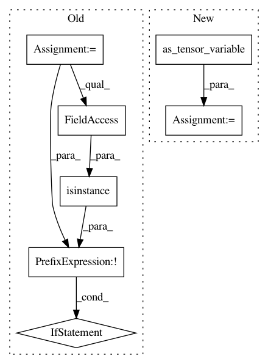

ab0283366b30e1697850a1c006764d466b97afc0,theano/tensor/nnet/bn.py,AbstractBatchNormInference,make_node,#AbstractBatchNormInference#Any#Any#Any#Any#Any#Any#,515
Before Change
def make_node(self, x, scale, bias, estimated_mean, estimated_variance, epsilon=1e-4):
assert x.ndim == scale.ndim == bias.ndim == estimated_mean.ndim == estimated_variance.ndim
if not isinstance(epsilon, theano.Variable):
epsilon = as_tensor_variable(epsilon)
return Apply(self, [x, scale, bias, estimated_mean, estimated_variance, epsilon], [x.type()])
def grad(self, inputs, grads):
x, scale, bias, est_mean, est_var, epsilon = inputs
After Change
def make_node(self, x, scale, bias, estimated_mean, estimated_variance, epsilon=1e-4):
x = as_tensor_variable(x)
scale = as_tensor_variable(scale)
bias = as_tensor_variable(bias)
estimated_mean = as_tensor_variable(estimated_mean)
estimated_variance = as_tensor_variable(estimated_variance)
epsilon = as_tensor_variable(epsilon)
In pattern: SUPERPATTERN
Frequency: 3
Non-data size: 7
Instances
Project Name: Theano/Theano
Commit Name: ab0283366b30e1697850a1c006764d466b97afc0
Time: 2017-02-03
Author: nouiz@nouiz.org
File Name: theano/tensor/nnet/bn.py
Class Name: AbstractBatchNormInference
Method Name: make_node
Project Name: Theano/Theano
Commit Name: ab0283366b30e1697850a1c006764d466b97afc0
Time: 2017-02-03
Author: nouiz@nouiz.org
File Name: theano/tensor/nnet/bn.py
Class Name: AbstractBatchNormTrainGrad
Method Name: make_node
Project Name: Theano/Theano
Commit Name: ab0283366b30e1697850a1c006764d466b97afc0
Time: 2017-02-03
Author: nouiz@nouiz.org
File Name: theano/tensor/nnet/bn.py
Class Name: AbstractBatchNormTrain
Method Name: make_node